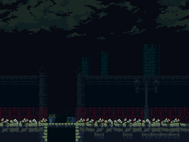
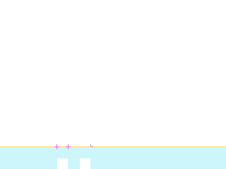
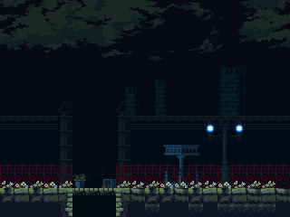

rmCourtyard
ROOM_229_S003 · ROOM 229 · rectangle [640, 0, 320, 240]


Статическая реконструкция v4; не native gameplay screenshot. Голубой: маски; жёлтый: опоры; розовый: pivot.
Исходный OBJT sprite_index, кадр 0 — исследовательский кандидат

Не исполнены native Create/Step/Draw, shaders, FSM и динамические spawn paths.
Готовность
Статическая основа: ready. Полная native-сцена: blocked_native_audit. Игровая сборка: не создана.
Переработать только подтверждённые статические визуальные слои под будущую авторскую игру. Сохранить сетку, границы, читаемость опор и места стыков. Новые сюжет, сцены и рисунки ещё не утверждены.
Зависимости
Future art direction and target asset classifier · Native actor/spawner/state/VFX audit before complete scene handoff
Рабочая очередность предложена по связности. Исполнитель: художница; личность, сроки и новые рисунки не назначены.
Depth слои: 5, 4, 3, 2, 0. Опоры и ограничения: точные ROOM transforms и отдельные авторские маски; соседство не переосмыслять.
Входы, выходы и соседи
Входы: E234_00
Выходы: E229_02
{"section": "ROOM_229_S002", "kind": "shared_image_boundary", "direction": "left", "physical_passage": "unknown; drawing boundary is not a door"}
{"section": "ROOM_229_S004", "kind": "shared_image_boundary", "direction": "right", "physical_passage": "unknown; drawing boundary is not a door"}
{"section": "ROOM_234_S001", "room": 234, "edge": "E229_02", "kind": "authored_transition", "direction": "down", "conditions": "room-level gate evidence; not evaluated", "source_anomaly": null}
Исходные условия и механизмы комнаты
[
{
"x": 816,
"y": 160,
"object": 26,
"instance_id": 105103,
"creation_code": -1,
"scale_x": 1.0,
"scale_y": 1.0,
"color": 4294967295,
"rotation": 0.0,
"source_room": 229,
"source_object": "SavePoint2",
"author_depth": 2,
"derived": false,
"flags": [],
"kind": "rest",
"asset": "INTERACT_497",
"bell_asset": "INTERACT_520",
"bell_offset": [
14,
-17
],
"interaction_radius": 40
},
{
"x": 1552,
"y": 208,
"object": 386,
"instance_id": 105117,
"creation_code": -1,
"scale_x": 1.0,
"scale_y": 1.0,
"color": 4294967295,
"rotation": 0.0,
"source_room": 229,
"source_object": "oCastleGate",
"author_depth": 0,
"derived": false,
"flags": [
138
],
"kind": "drawbridge",
"asset": "INTERACT_609",
"manual": false,
"interaction_radius": 28
}
]Проверенные assetID
Кандидаты и блокеры
SPRT_497, SPRT_688
Полные авторские placements ↗ · Native-аудит ↗ · Очередь и возвраты ↗